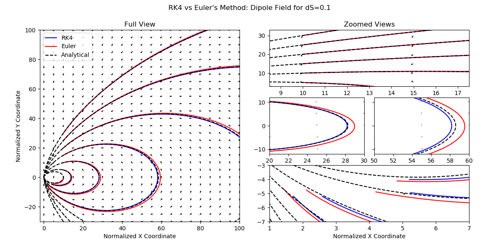
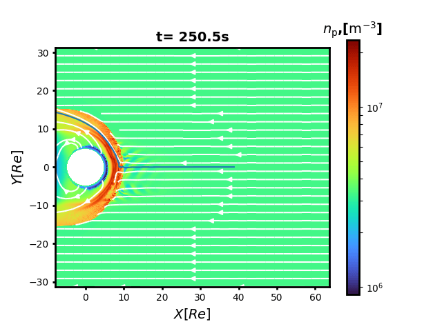
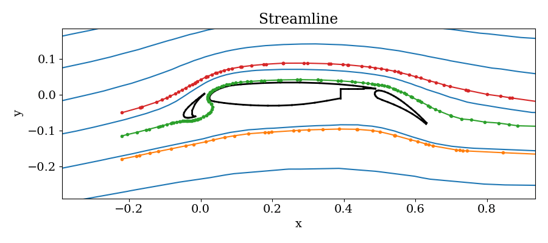
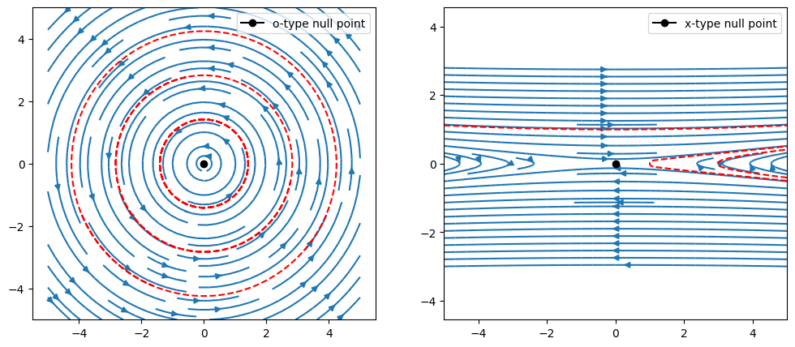
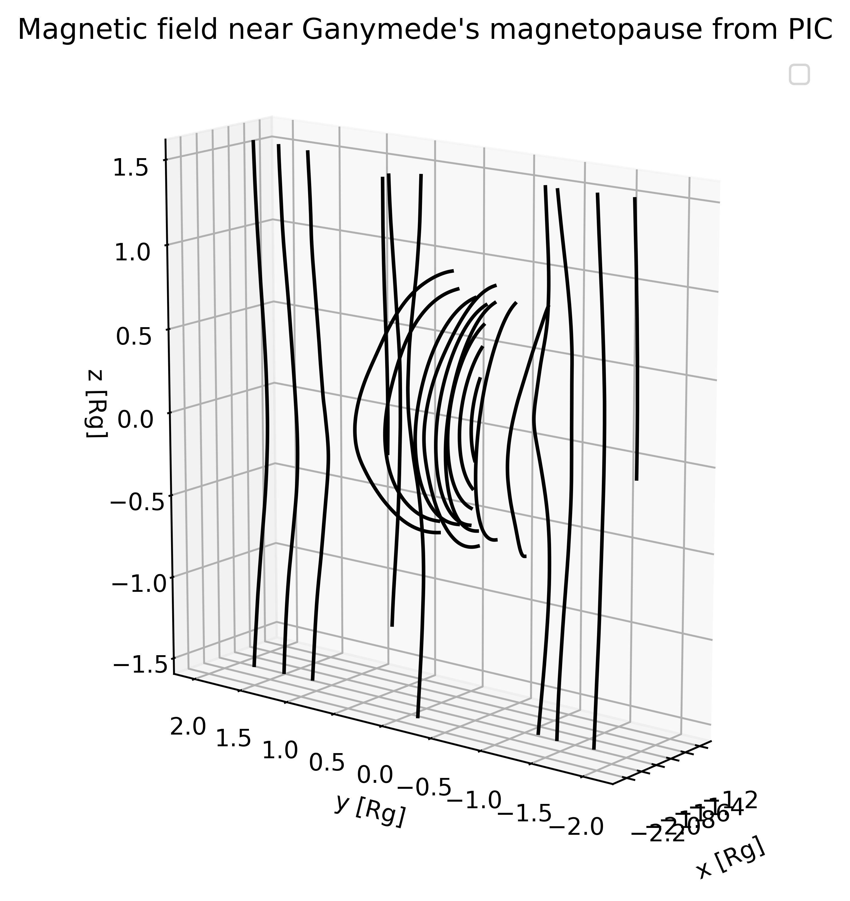

Examples
There is one higher level function API, trace, for tracing on a 2D and 3D mesh. This function accepts different types of input mesh arguments.[1] The default scheme is 4th order Runge-Kutta method RK4(), but users can also switch to other options like 2nd order Euler method Euler().[2] User can also specify the maximum number of tracing steps via keyword maxstep, the step size in normalized coordinates [0,1] ds, order of grid gridtype, and tracing directions direction chosen between "both","forward","backward".
More examples can be found in the examples folder.
Structured 2D mesh
using FieldTracer
x = range(0, 1, step=0.1)
y = range(0, 1, step=0.1)
# ndgrid
gridx = [i for i in x, _ in y]
gridy = [j for _ in x, j in y]
u = copy(gridx)
v = -copy(gridy)
startx = 0.1
starty = 0.9
trace(u, v, startx, starty, x, y)Unstructured 2D mesh
See the example in test_unstructured.jl.
Structured 3D mesh
Tracing on a structured 3D mesh is a natural extension from 2D.
using FieldTracer, Meshes
x = range(0, 10, length=15)
y = range(0, 10, length=20)
z = range(0, 10, length=25)
bx = fill(1.0, length(x), length(y), length(z))
by = fill(1.0, length(x), length(y), length(z))
bz = fill(1.0, length(x), length(y), length(z))
xs, ys, zs = 1.0, 1.0, 1.0
Δx = x[2] - x[1]
Δy = y[2] - y[1]
Δz = z[2] - z[1]
grid = CartesianGrid((length(x)-1, length(y)-1, length(z)-1),
(0., 0., 0.),
(Δx, Δy, Δz))
# default direction is both
x1, y1, z1 = trace(bx, by, bz, xs, ys, zs, grid; alg=Euler(), ds=0.2, maxstep=200)Seeding
We provide a function select_seeds for generating uniform seeds for the starting points in 2D/3D. This ensures consistent sampling of fieldlines across the same points to reduce visual shift effect across multiple frames.
Furthermore, we can select seeds interactively on the figure and plot on-the-fly. See the example demo_interactive_select.jl.
Parallelization
Parallelized tracing can happen at fieldline level, whereas it can be less efficient to do it per line. We recommend providing a bunch of points to the trace function and then collecting results:
linex, liney = zeros(20,10), zeros(20,10)
Threads.@threads for i = 1:10
lx, ly = trace(u, v, startx, starty, x, y, maxstep=20)
linex[1:length(lx),i] = lx
liney[1:length(ly),i] = ly
endArrow
When plotting, it is usually convenient to display an arrow along the line for showing the direction. Currently we provide a function add_arrow which acts on a Matplotlib Line2D object and adds an arrow for it.[3]
Gallery
- Tracing in an analytic asymptotic field

- Tracing in a analytic 3D dipole field

- Tracing in a numerical 2D magnetic field

- Tracing in a 2D equatorial plane Earth magnetosphere simulation

- Streamline tracing in a 2D triangular mesh around an airfoil

An example is shown for the 2D streamline tracing in the unstructured triangular mesh for the famous airfoil problem. The blue lines are the analytic stream functions derived from incompressible Euler equations which are calculated numerically. Three colored lines are displayed with dots representing the footprints inside each cell.
- Fieldline tracing near the magnetic null points, compared to the
streamplotfunction in Matplotlib

- Fieldline tracing near Ganymede's upstream magnetopause
